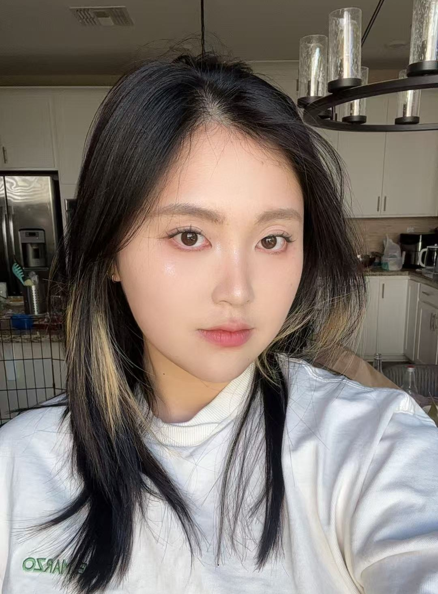
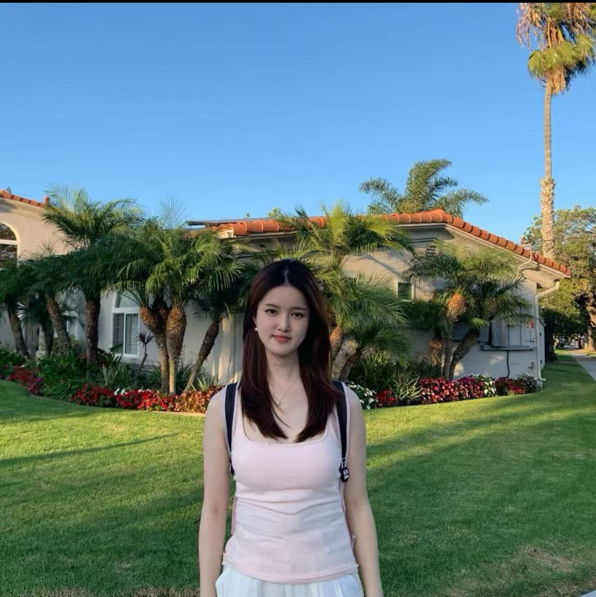
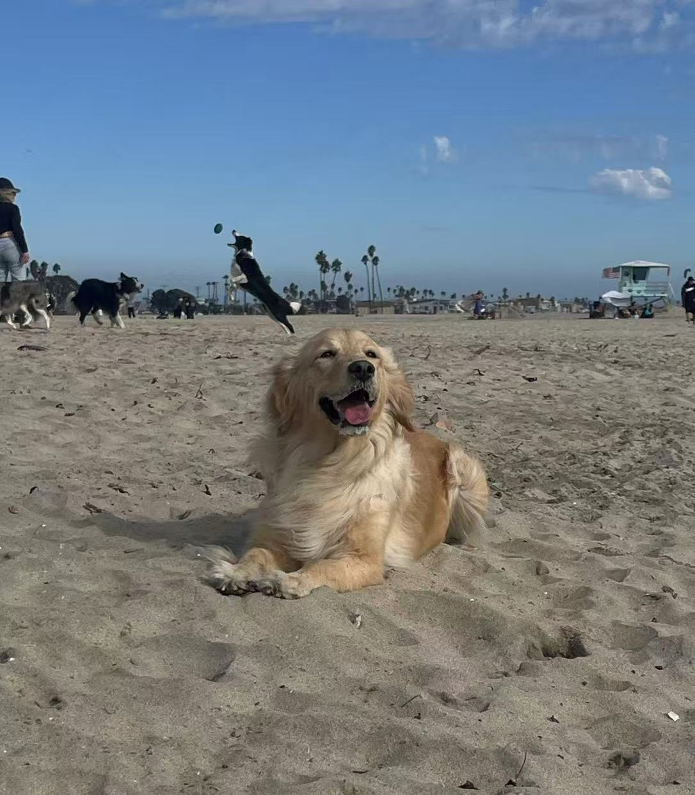

About Us
Founded by statistics students passionate about animal welfare and data science.
Jennie Zhan

Jiayu Zhan is a graduate student in Statistics at UCLA with interests in statistical modeling, machine learning, data visualization, and data-driven decision making. Her academic work includes projects in predictive modeling, financial analytics, healthcare applications of machine learning, and statistical communication. Through Brulee Pawlytics, she aims to apply quantitative methods to help animal shelters improve adoption outcomes and make more effective operational decisions. She is also the owner of Brulee and Leo (orange tabby cat).
Jiawen Tang

Jiawen Tang is a graduate student in Statistics at UCLA with interests in data visualization, marketing analytics, and strategic decision-making. She enjoys transforming complex datasets into clear and actionable insights that support effective business and organizational planning. Through Brulee Pawlytics, she focuses on communicating analytical findings in ways that are accessible, practical, and impactful for animal shelters and community organizations. She is also the owner of a ragdoll cat named Huahua.
Brulee

Brulee is the Chief Happiness Officer (CHO) of Brulee Pawlytics and the inspiration behind the firm's mission. As a golden retriever and dedicated advocate for treats, naps, and belly rubs, she reminds us that every pet deserves a loving home. Her primary responsibilities include morale support, quality assurance for dog treats, and serving as the firm's official mascot.